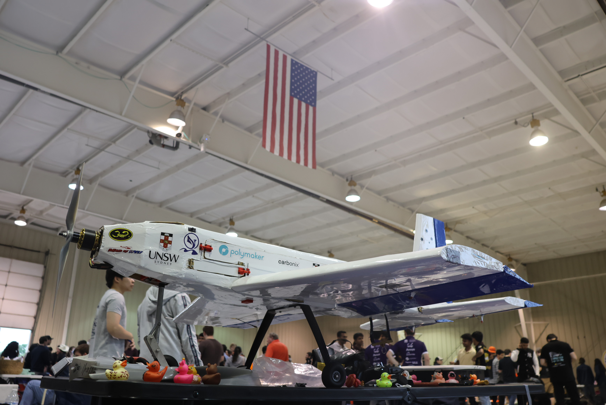
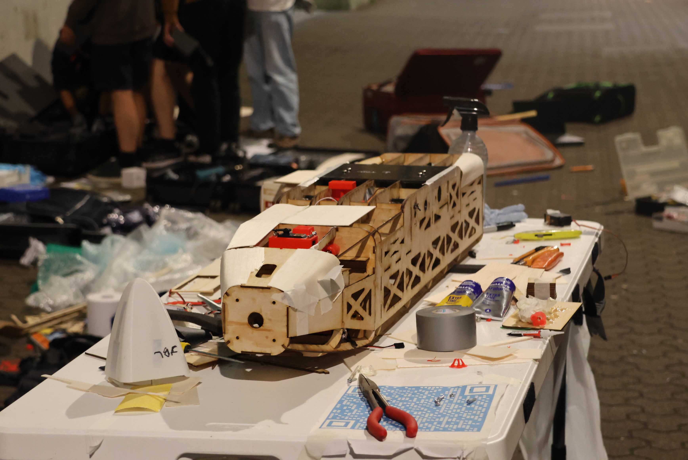
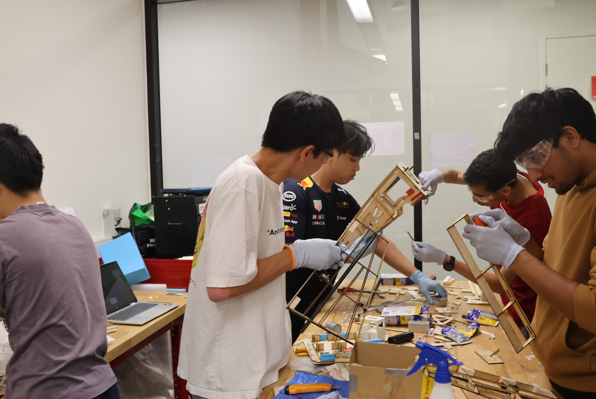
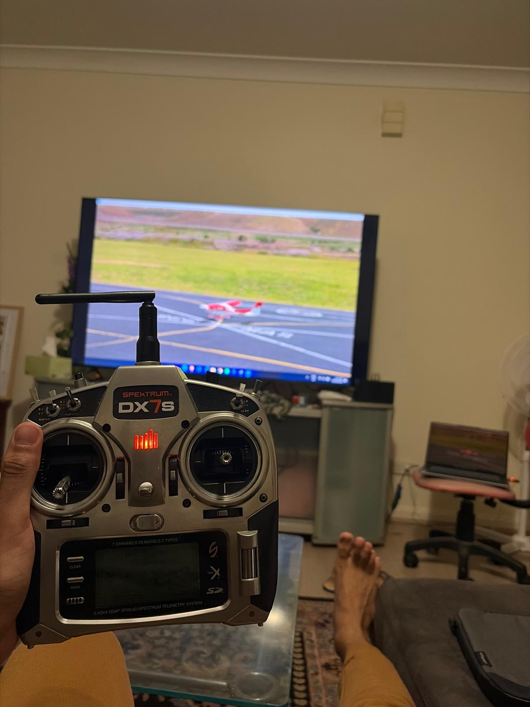
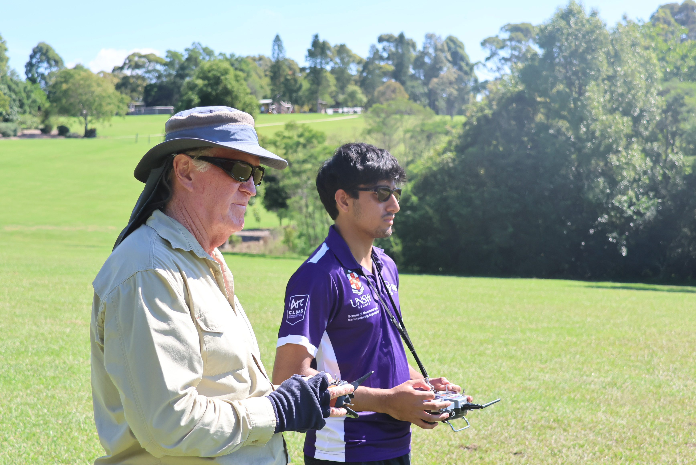
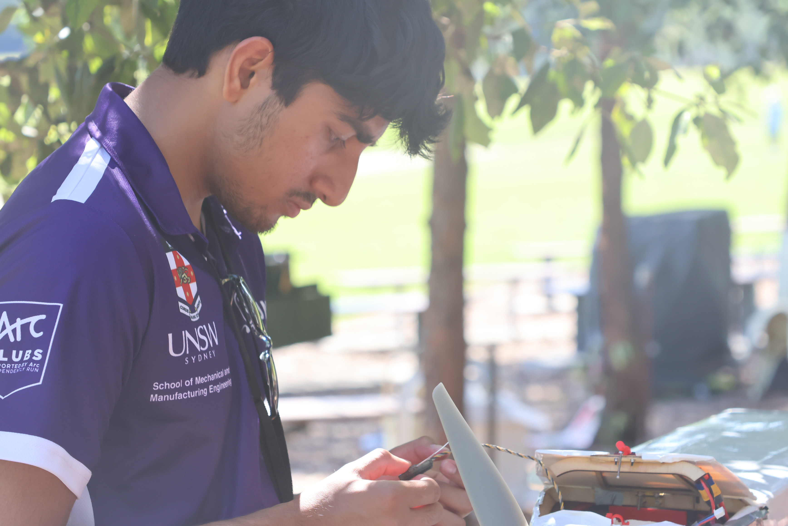

Design, Manufacture and Flying of a Competition Remote Controlled Aircraft

Represented UNSW at the 2025-26 AIAA Design Build Fly (DBF) competition in Wichita, Kansas. Working within a multidisciplinary team of approximately 20 engineering students, I contributed to the design, manufacture, testing, and competition operation of a custom radio-controlled aircraft developed to satisfy a challenging multi-mission profile involving passenger transport, cargo carriage, and remote banner deployment.
DBF provided a unique opportunity to apply aerospace engineering theory to a complete aircraft development cycle, requiring the integration of aerodynamics, structures, manufacturing, flight operations, and systems engineering under real performance and competition constraints.
The competition objective was to design, manufacture, and operate a radio-controlled aircraft capable of completing three distinct missions while satisfying strict dimensional, structural, and operational requirements. The aircraft was required to transport passenger and cargo payloads, remotely deploy a banner during flight, and maintain reliable flight performance throughout all mission phases.
Success required balancing payload capability, aerodynamic efficiency, structural integrity, manufacturability, reliability, and flight handling characteristics within a highly constrained design space.

Manufacturing fuselage with multiple methods such as balsa skinning, epoxy, solar filming etc.


Practicing flight dynamics and behaviour of aircraft on RealFlight Evolution, accruing over 50 hours of flight time.

Learning practical flight lessons under multi-decade experienced flight instructor, Ed, from HEMFC (Hornsby Electric Model Flying Club).

Preparation such as attaching wings to fuselage, connecting avionics components, flight control verification, range test, etc.
Testing aircraft to provide feedback on maneuverability, handling capacity, etc.
Selected as part of the UNSW team representing one of three Australian teams at the 2025-26 AIAA Design Build Fly Flyoff in Wichita, Kansas.
Contributed to the successful design, manufacture, testing, and operation of a competition aircraft within an international field of 89 attending teams.
The aircraft progressed through design review, manufacturing, flight testing, and technical inspection phases, culminating in a final overall placing of 77th from 98 report-submitting teams.
This project significantly strengthened my understanding of how aircraft structures, aerodynamics, manufacturing constraints, and flight operations interact throughout the engineering design process.
Designing, manufacturing, and piloting a real aircraft provided practical insight that extends far beyond classroom theory. I also developed stronger skills in multidisciplinary collaboration, iterative design, technical communication, and engineering decision-making under time and performance constraints.